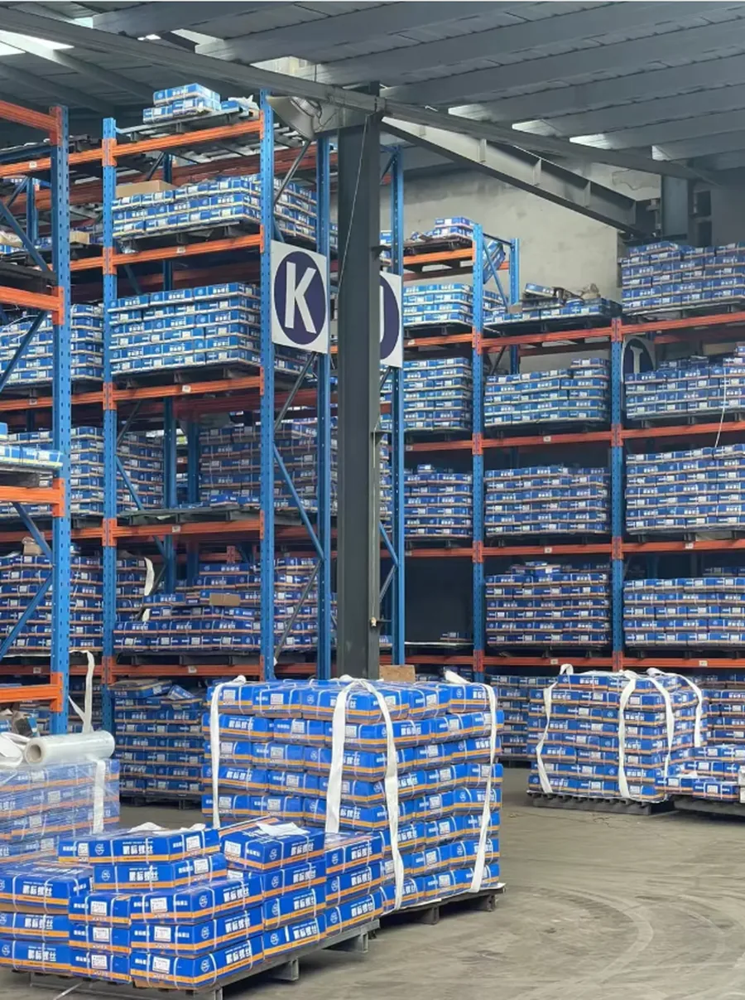
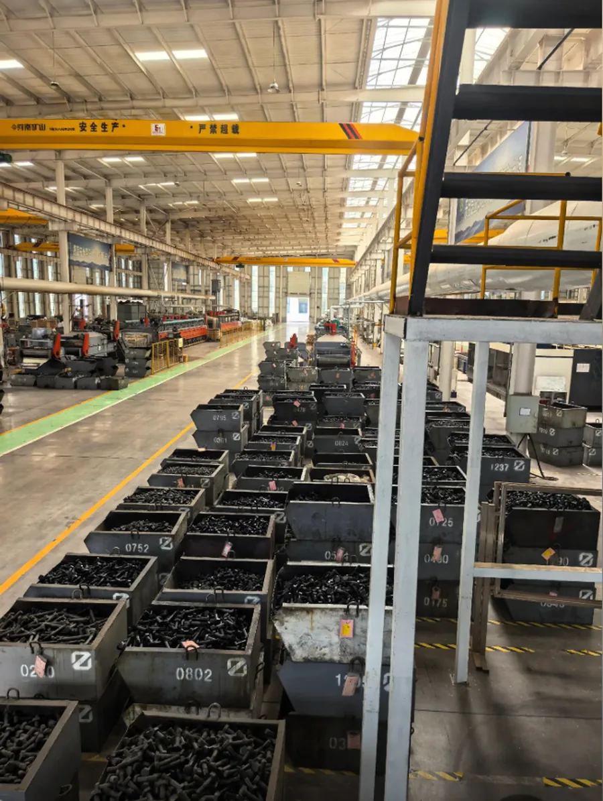
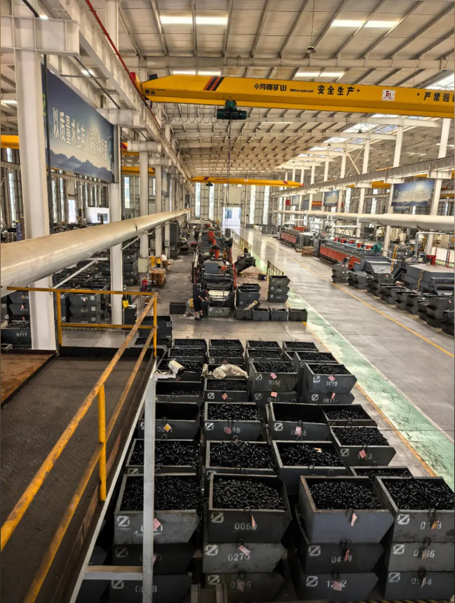
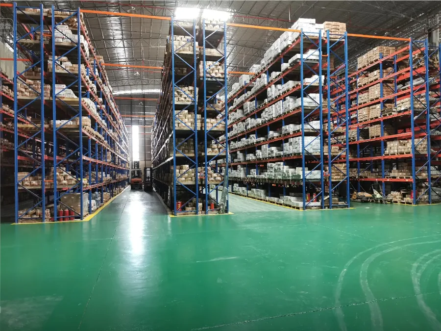
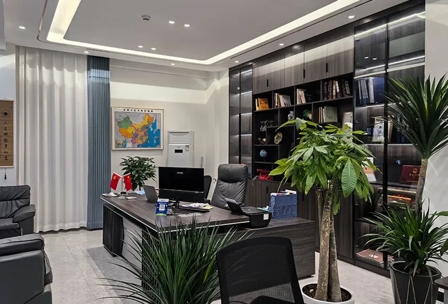
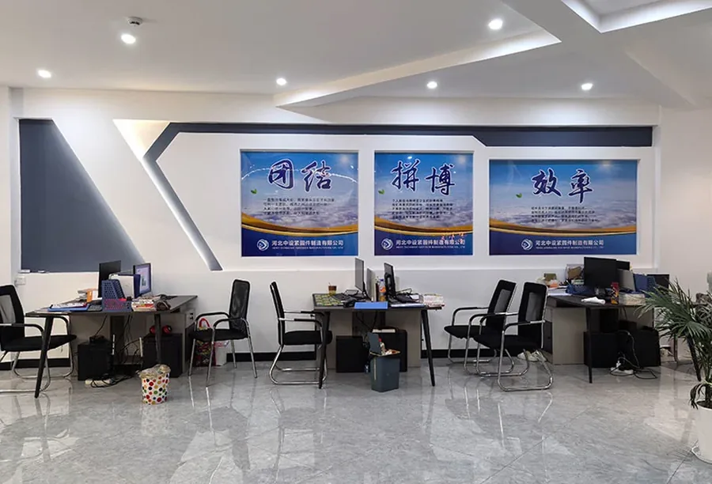
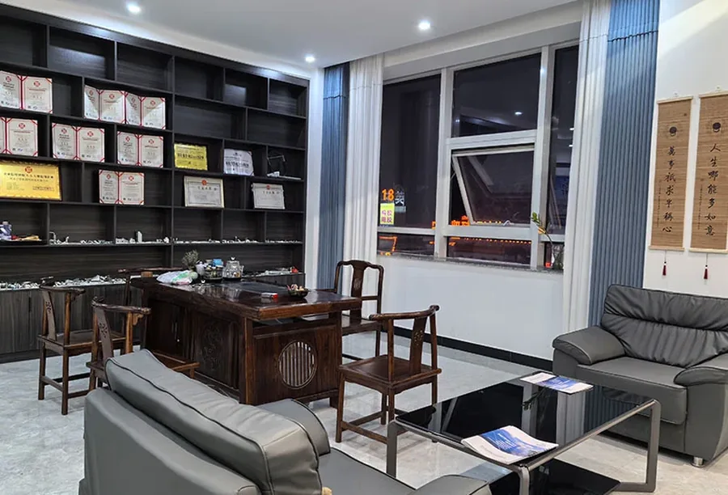

WTファスナーについて
2005年以来、精密締結部品製造における信頼できるパートナー
2005年以来、精密締結部品製造における信頼できるパートナー

私たちは2005年に、小さな作業場と数台の機械、そしてシンプルなアイデアからスタートしました。それは、約束どおりの性能を発揮するファスナーを毎回必ず作る、というものでした。
過去20年間で、当社はCNC加工、冷間鍛造ライン、自動品質検査を備えた本格的な事業へと成長しました。しかし、その根幹となる理念は変わっていません。当社の工場から出荷されるすべてのファスナーは、私たちが自ら使用する場合に求めるであろう厳格な検査を受けています。
現在、当社は50カ国以上に製品を出荷しています。カタログには、標準的な六角ボルト、平ワッシャー、自動車、建設、再生可能エネルギープロジェクト向けの特注ソリューションなど、数千種類もの仕様が掲載されています。当社はISO 9001認証を取得しており、お届けするすべての製品に責任を持っております。
最先端の製造および保管能力
精密CNC加工ライン

高精度生産設備

自動化加工作業

最先端CNC設備

拡張された精密加工エリア

多工程生産ライン

15,000平方メートルの保管容量

整理された在庫管理

大規模保管作業

効率的な在庫システム

効率的な輸送業務

高度な試験装置

自動検査システム

カスタマーサービスオフィス

会議・調整エリア

チームワークスペース
これらは単なる壁に書かれた言葉ではなく、私たちの工場運営、顧客対応、そして日々の意思決定のあり方を形作るものです。
当社は、高度な試験装置と熟練した技術者に支えられ、すべての製品ラインにおいてマイクロメートルレベルの精度を追求しています。
確かな品質と納期厳守をお約束します。私たちはすべての約束を守り、すべての製品に責任を持ちます。
業界の要求と進化する基準に先んじるために、研究開発と製造技術への継続的な投資を行っています。
廃棄物の削減、エネルギー効率の向上、リサイクル可能な材料の使用に重点を置いた、責任ある製造プロセス。
当社は最高水準の品質を維持しています
2008年から認定を受けています
TS16949 移行
環境に配慮した生産
輸出コンプライアンス
原材料から完成品まで
認定サプライヤーから厳選された高品質の鋼材および合金
精密成形のための冷間鍛造と熱間鍛造
正確な寸法を実現するために、ねじ転造と機械加工が行われます。
強度要件を満たすための焼き戻しと焼き入れ
亜鉛メッキ、溶融亜鉛めっき、または特注仕上げ
高度な検査機器を用いた100％検査
標準ボルト500本が必要な場合でも、完全オーダーメイドのご注文でも、当社のチームが最適な方法を見つけるお手伝いをいたします。
お問い合わせ